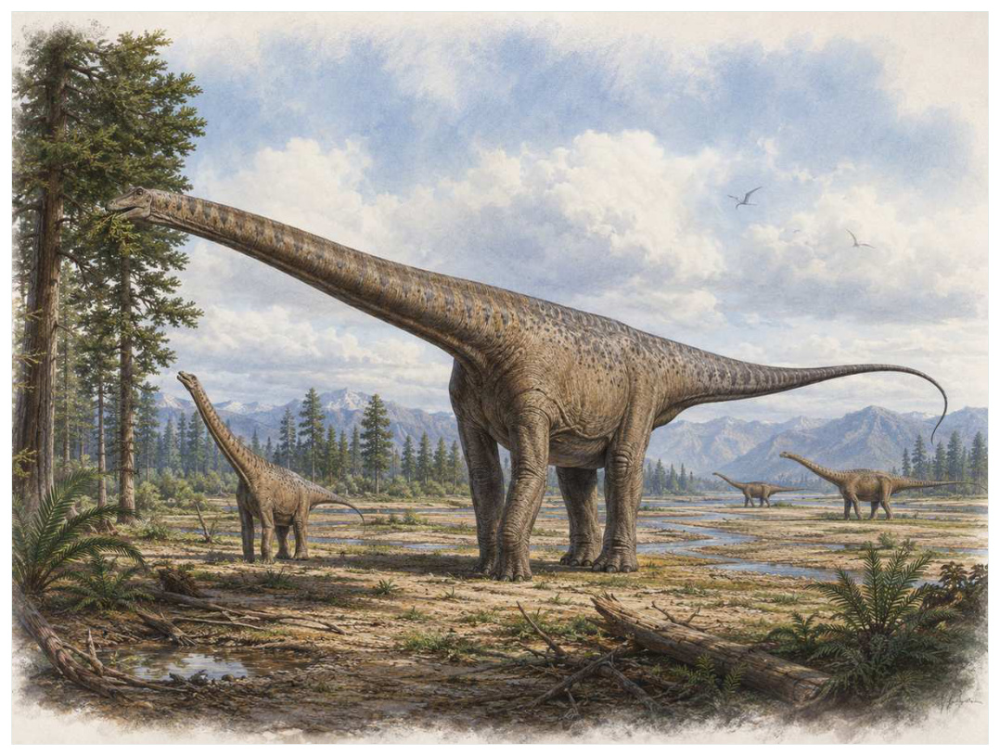
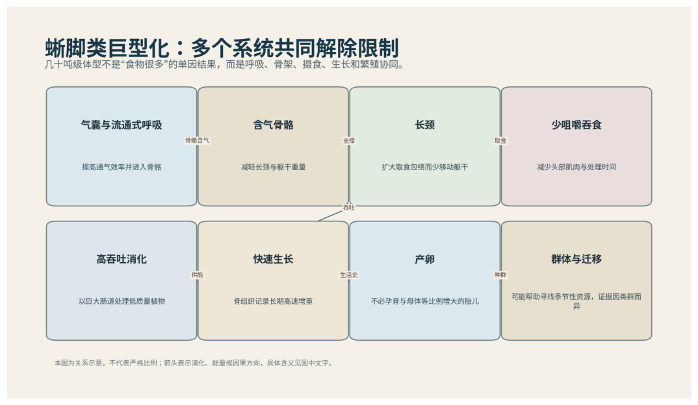

第12篇 · 侏罗纪：巨型恐龙与成熟中生代生态 · 第 41 章
蜥脚类为何能长到几十吨：一套互相咬合的身体系统
本篇主题:侏罗纪：巨型恐龙与成熟中生代生态
大型蜥脚类、兽脚类、翼龙、海洋爬行动物和小型哺乳动物共同构成完整世界。

本章科学复原配图 （用于呈现结构与生态关系, 不替代化石照片、测量数据与系统发育证据。）
如果把演化树看作不断生长又不断被修剪的枝丛，晚三叠世至白垩纪，以侏罗纪巨型化为核心是其中关系重新布置的一段。蜥脚类巨型化不是一条性状造成的，而是多项性状互相放大：长颈扩大取食范围而无需搬动沉重身体；小头和不充分咀嚼降低颅部重量并提高吞食速度；鸟式肺和气囊提供持续气流并侵入骨骼减轻颈部；卵生让母体不必孕育与成体等比例增大的胎儿；快速生长和高繁殖潜力则补偿幼体高死亡率。任何一项单独存在都不足以制造七十吨动物。
进入这个时代
若真正置身其中，首先感受到的是介质本身：水是否含氧、地面是否稳定、空气是否干燥、植被是否遮挡视线。身体结构只有放在这些条件中才有意义。一只成年蜥脚类每天面对的是庞大能量预算。它不能像反刍兽那样长时间细嚼每一口，只能用牙齿迅速剥取枝叶，让巨大消化道和微生物慢慢处理。长颈像移动采食半径，站在原地便能覆盖大片植被；气囊减轻颈椎并帮助散热。
在“蜥脚类为何能长到几十吨：一套互相咬合的身体系统”所覆盖的时间里，不能把地理与气候当作固定背景。海陆位置、海平面、河流或植被结构会改变资源可达性，同一性状在不同地区可能得到完全相反的选择结果。
以蜥脚类为何能长到几十吨：一套互相咬合的身体系统为例，环境变化首先作用于生理边界。温度改变酶反应和耗氧量，氧气决定持续活动余量，酸碱度影响骨骼和外壳材料，水分则限制气体交换与胚胎发育。只有跨过这些底层约束，捕食和竞争才有机会决定谁占优势。 在本章中，这一约束具体落在“大体型降低单位质量散热和被捕食风险，却增加供血与繁殖成本”这条关系上。
再从晚三叠世至白垩纪，以侏罗纪巨型化为核心的时间尺度看，身体结构总有材料和发育成本。硬壳提高防护却使生长和运动更昂贵，长颈扩大取食范围却增加支撑与供血问题，高代谢提高持续活动也提高食物需求。所谓成功设计从来是特定环境中的权衡。 它与“气囊侵入与气动骨”共同决定了后续变化可以沿哪些路径发生。

图 41-1 蜥脚类巨型化来自呼吸、骨骼、摄食与繁殖的组合。
生态系统如何运转
在晚三叠世至白垩纪，以侏罗纪巨型化为核心，“大体型降低单位质量散热和被捕食风险，却增加供血与繁殖成本”把环境条件转化为生物之间的差异。相同气候并不会平均影响所有支系，因为它们利用的食物、水层、底质和繁殖地点并不相同。
围绕“大体型降低单位质量散热和被捕食风险，却增加供血与繁殖成本”，还要考虑空间异质性。一项在浅海、河谷或林冠有效的策略，移到深水、干旱内陆或开阔地便可能失去优势。因此同一支系常出现区域性扩张，而不是全球同步取代。 对蜥脚类为何能长到几十吨：一套互相咬合的身体系统而言，这一后果还会与“广泛吞食和后肠发酵把低质量植物转化为能量”相互放大或抵消。
本章的一条关键关系是“广泛吞食和后肠发酵把低质量植物转化为能量”。它首先改变资源在个体之间的分配：能更早发现、处理或占据资源的种群获得收益，而另一方会承受新的选择压力。
围绕“广泛吞食和后肠发酵把低质量植物转化为能量”，这一机制也会留下间接证据：咬痕、修复伤、足迹密度、粪化石、牙齿磨损和群落年龄结构分别记录不同环节。只有多种证据方向一致，行为解释才应上调可信度。对蜥脚类为何能长到几十吨：一套互相咬合的身体系统而言，这一后果还会与“大量产卵产生许多小幼体，使种群恢复不同于大型胎生哺乳动物”相互放大或抵消。
“大量产卵产生许多小幼体，使种群恢复不同于大型胎生哺乳动物”体现了生态系统的反馈性。一方结构或行为稍有改变，另一方的防御、逃避、繁殖和空间选择就会重新排列，长期累积后才形成宏观演化差异。
围绕“大量产卵产生许多小幼体，使种群恢复不同于大型胎生哺乳动物”，从演化树看，相似关系可能在远亲中反复出现。功能相近不必意味着近缘，而同一祖先结构也可能被后代改作完全不同的用途；生态解释必须与系统发育互相校验。 对蜥脚类为何能长到几十吨：一套互相咬合的身体系统而言，这一后果还会与“大体型降低单位质量散热和被捕食风险，却增加供血与繁殖成本”相互放大或抵消。
关键演化创新
在“蜥脚类为何能长到几十吨：一套互相咬合的身体系统”中，围绕“气囊侵入与气动骨”，从共同选择角度看，“气囊侵入与气动骨”可能先服务旧功能，后来才参与今天最熟悉的用途。把最终功能倒推成起源原因，会把演化误写成有目的的工程。它首先需要在晚三叠世至白垩纪，以侏罗纪巨型化为核心的生态条件下产生可测量收益。
就“气囊侵入与气动骨”而言，研究者通过近缘支系比较、发育同源、关节活动、微观组织和出现顺序重建这条路径。真正有价值的过渡化石不是“半成品”，而是证明中间组合可以独立生活。 本章把它与“长颈小头的采食几何”并列，是为了显示复杂性状往往依赖多部分协同。
在“蜥脚类为何能长到几十吨：一套互相咬合的身体系统”中，围绕“长颈小头的采食几何”，讨论“长颈小头的采食几何”时，最重要的问题是它解除哪一道限制。只要原有身体在运动、摄食、呼吸或繁殖上受约束，能够稍微缓解约束的变异就可能积累，最终产生看似跃迁的结果。 它首先需要在晚三叠世至白垩纪，以侏罗纪巨型化为核心的生态条件下产生可测量收益。
就“长颈小头的采食几何”而言，它的成功具有条件性。环境稳定时，专门化可提高效率；危机到来时，同一专门化可能限制食物和栖息地选择。演化创新因此既能开启辐射，也能制造新的脆弱性。 本章把它与“卵生、快速生长和巨型化生命周期”并列，是为了显示复杂性状往往依赖多部分协同。
在“蜥脚类为何能长到几十吨：一套互相咬合的身体系统”中，围绕“卵生、快速生长和巨型化生命周期”，从共同选择角度看，“卵生、快速生长和巨型化生命周期”可能先服务旧功能，后来才参与今天最熟悉的用途。把最终功能倒推成起源原因，会把演化误写成有目的的工程。 它首先需要在晚三叠世至白垩纪，以侏罗纪巨型化为核心的生态条件下产生可测量收益。
就“卵生、快速生长和巨型化生命周期”而言，这一变化还可能在多个支系中独立发生。若功能相似而解剖来源不同，就是趋同；若结构来自共同祖先但功能改变，则属于同源结构的分化。二者不能仅靠外观判断。 本章把它与“气囊侵入与气动骨”并列，是为了显示复杂性状往往依赖多部分协同。
生命群像：把物种放回生态网络
阿根廷龙（Argentinosaurus huinculensis）
阿根廷龙（Argentinosaurus huinculensis）生活在晚白垩世早期，已知体型约为约30米以上、体重估计范围常在50至80吨。它在群落中的角色可概括为巨型高位和广幅植食者。最值得观察的结构是巨大椎骨、肢骨和气动结构代表陆生动物体型上限附近。这些结构不是为了后来时代而准备，而是在当时直接影响摄食、运动、防御或繁殖。
对阿根廷龙而言，把它放回群落后，结构的意义更清楚。食物并不会平均分布，水深、植被高度、底质和季节把资源切成小块；它的身体让其中一部分资源可被利用，也使它与近缘种错开生态位。种群命运还取决于幼体能否成长、繁殖地点是否稳定以及灾害后是否仍有避难所。 这使“巨大椎骨、肢骨和气动结构代表陆生动物体型上限附近”不能脱离其巨型高位和广幅植食者角色来理解。
关于它的直接依据是：材料不完整使总长和体重高度依模型，应报告范围而非单值。研究者还必须确认骨骼是否属于同一个体、是否被水流搬运、压扁是否改变比例，以及不同大小是否只是成长阶段。只有解剖、地层和功能证据相互一致，复原才可上调为高可信。
由阿根廷龙这个案例看，它在生命史中的价值不在于离现代形态还有多远，而在于证明这一身体组合曾真实可行。即使没有直系后代，支系也可能在当时持续繁盛，并通过捕食、植食或栖息地工程改变其他生命的选择环境。 它在晚白垩世早期留下的记录，因此同时是第41章所讨论的形态史和生态史的一部分。
巴塔哥巨龙（Patagotitan mayorum）
在这一章的生命群像里，巴塔哥巨龙（Patagotitan mayorum）不能只当作图鉴名称。它出现于晚白垩世早期，体型大约约30米、数十吨，主要生活方式是巨型植食蜥脚类；多具个体的肢骨和椎骨提供较可靠比例参照则说明身体怎样围绕这一生活方式进行组合。
对巴塔哥巨龙而言，同域物种的存在迫使它分割时间与空间。相似牙齿不一定吃完全相同的食物，相似四肢也可能适应不同底质；微磨损、同位素和伴生群落常能揭示这种细分。环境改变时，原本减少竞争的专门化又可能成为迁移和改食的障碍。这使“多具个体的肢骨和椎骨提供较可靠比例参照”不能脱离其巨型植食蜥脚类角色来理解。
现有认识建立在体重算法会随软组织密度和骨架姿势变化，不能把宣传数字视为精确测量之上。古生物学的可信度不是来自一件戏剧化标本，而是来自多件标本、多个地点和不同方法得到相容结果。新发现若改变比例或分类，并非此前研究毫无价值，而是证据边界被重新画清。
由巴塔哥巨龙这个案例看，从生态尺度看，它与本章其他成员共同维持一张网络。任何“最强”排名都会遗漏资源供应、幼体死亡、疾病和气候脉冲；真正决定长期成功的是种群能否在波动中不断完成繁殖。 它在晚白垩世早期留下的记录，因此同时是第41章所讨论的形态史和生态史的一部分。
迷惑龙（Apatosaurus louisae）
从外形看，迷惑龙（Apatosaurus louisae）最容易被记住的是粗壮颈部、鞭状尾和强壮前肢不同于纤细梁龙。它生活在晚侏罗世，大小约约21至23米、二十吨级，承担大型低至中位浏览者这一生态功能。把年代、体型和功能放在一起，才能避免把奇特形态当成无意义装饰。
对迷惑龙而言，它的成功不需要在所有性能上压倒其他物种，只需在特定资源和风险组合中留下更多后代。速度、咬合、装甲、感官与繁殖之间存在预算，某项性能极端化往往意味着另一项被牺牲。所谓“霸主”只是复杂权衡后的区域性结果。 这使“粗壮颈部、鞭状尾和强壮前肢不同于纤细梁龙”不能脱离其大型低至中位浏览者角色来理解。
支持该解释的材料包括颈部软组织和尾端速度存在模型争议，骨骼比例高可信。若不同证据出现冲突，应优先报告范围而不是强行给出单值。例如体长会随参照类群变化，运动能力会随软组织假设变化，系统位置也会随新增性状重新计算。
由迷惑龙这个案例看，它也展示专门化的双面性：结构在稳定环境中提高效率，却可能在气候、食物或竞争格局突变时限制转向。灭绝不是对设计的道德评分，而是性状、地理范围和偶然事件相遇后的历史结果。 它在晚侏罗世留下的记录，因此同时是第41章所讨论的形态史和生态史的一部分。
圆顶龙（Camarasaurus）
圆顶龙（Camarasaurus）是晚侏罗世的一名真实生态成员，而不是通往后代的抽象过渡。它约有约15至23米，以中高位浏览植食者的方式获取资源；较短粗颈、大头和勺形牙适合处理较坚韧植物反映了其祖先历史与局部选择压力共同留下的结果。
对圆顶龙而言，从种群角度看，偶发捕猎和个体伤病远不如长期繁殖率重要。广泛分布的普通个体比一具异常巨大的标本更能代表支系，然而普通个体往往较少进入公众叙事。研究者必须防止把化石收藏偏好误当成古代丰度。 这使“较短粗颈、大头和勺形牙适合处理较坚韧植物”不能脱离其中高位浏览植食者角色来理解。
我们之所以能够作出上述判断，主要因为牙齿微磨损与颈椎显示它与梁龙分割食物资源，是否群居因骨层而异。单一结构通常有多种功能解释，所以还要查看磨损、病理、肌肉附着、沉积环境和近缘比较。计算模型能排除不可能姿势，却不能自动恢复没有保存的软组织。
由圆顶龙这个案例看，面对仍有争议的细节，负责任的复原不是停止讲述，而是标注证据等级。形态、年代和亲缘可较确定，具体姿势、叫声、求偶和群猎则按材料降级；新标本会在这些边界内继续改写认识。 它在晚侏罗世留下的记录，因此同时是第41章所讨论的形态史和生态史的一部分。
蜀龙（Shunosaurus lii）
若把镜头从时代拉近到个体，蜀龙（Shunosaurus lii）会首先进入视野。它生活于中侏罗世，体型约约9至11米。作为中型植食蜥脚类，它依靠尾端骨槌显示蜥脚类防御结构也能高度特化与环境和其他生物发生关系。
对蜀龙而言，把它放回群落后，结构的意义更清楚。食物并不会平均分布，水深、植被高度、底质和季节把资源切成小块；它的身体让其中一部分资源可被利用，也使它与近缘种错开生态位。种群命运还取决于幼体能否成长、繁殖地点是否稳定以及灾害后是否仍有避难所。 这使“尾端骨槌显示蜥脚类防御结构也能高度特化”不能脱离其中型植食蜥脚类角色来理解。
其复原依赖中国多具骨架支持复原，尾槌是否主要防御、种内竞争或兼具功能仍需判断。年代和保存形态通常属于较强证据，体重、速度、颜色和社会行为则需要额外假设。书中把这些层次拆开，是为了让读者知道哪些可视为事实，哪些仍应等待更多材料。
由蜀龙这个案例看，它不是祖先链条上必须跨过的一格。演化树中同时存在许多近缘支系，只有少数留下后代；旁支化石同样关键，因为它们显示某组性状出现的顺序和可行范围。 它在中侏罗世留下的记录，因此同时是第41章所讨论的形态史和生态史的一部分。
因果链：环境、生态与性状
从资源入口看，“大体型降低单位质量散热和被捕食风险，却增加供血与繁殖成本”决定能量首先由谁获得，而“广泛吞食和后肠发酵把低质量植物转化为能量”决定能量随后怎样在群落中转移。只有当个体能够借助“气囊侵入与气动骨”把资源转化为生长或后代时，形态优势才会成为种群优势。阿根廷龙与巴塔哥巨龙分别展示了这条链上的不同位置：前者的巨大椎骨、肢骨和气动结构代表陆生动物体型上限附近使其偏向巨型高位和广幅植食者，后者的多具个体的肢骨和椎骨提供较可靠比例参照则服务于巨型植食蜥脚类。这并不意味着二者必然直接竞争；更常见的情况是，它们通过共享资源、改变栖息地或影响共同捕食者而间接连接。把这种间接作用纳入，才看得见蜥脚类为何能长到几十吨：一套互相咬合的身体系统不是物种名单，而是一张持续重新分配能量的网络。
“大量产卵产生许多小幼体，使种群恢复不同于大型胎生哺乳动物”说明环境不是在所有个体身上平均施力。若一个种群分布广、世代较短或能使用多种资源，它可能把一次局部危机吸收到地理和生活史差异之中；若另一个种群依赖狭窄水深、单一植物或特定繁殖场，平时高效的专门化就可能在变化中放大风险。巴塔哥巨龙和迷惑龙的差异可以用来提出这种比较，但不能仅凭外形宣布谁更适应。真正需要的是地层连续性、地区分布、年龄结构和伴生群落共同告诉我们，哪些性状在蜥脚类为何能长到几十吨：一套互相咬合的身体系统的具体条件下转化成了更稳定的繁殖。
如果把蜥脚类为何能长到几十吨：一套互相咬合的身体系统当作一次自然实验，可以追问：假如“大体型降低单位质量散热和被捕食风险，却增加供血与繁殖成本”较弱，“长颈小头的采食几何”是否仍会带来同样收益；假如“广泛吞食和后肠发酵把低质量植物转化为能量”更强，阿根廷龙的巨大椎骨、肢骨和气动结构代表陆生动物体型上限附近是否反而成为负担。反事实无法直接验证，却能帮助研究者识别模型隐含的因果假设。随后再用椎骨内部气腔CT揭示轻量化和骨组织生长线和血管密度估算生长速度寻找可区分的预测：不同机制应在体型分布、损伤类型、沉积环境或出现顺序上留下不同痕迹。科学解释不是为现有图景编一个顺耳故事，而是让相互竞争的解释接受同一批材料检验。
“大体型降低单位质量散热和被捕食风险，却增加供血与繁殖成本”与“大量产卵产生许多小幼体，使种群恢复不同于大型胎生哺乳动物”之间常存在反馈。一个支系改变沉积、植被或猎物数量后，环境会对其自身和其他支系产生新的选择压力；短期收益可能导致长期资源下降，局部工程行为也可能创造此前不存在的栖息地。阿根廷龙作为巨型高位和广幅植食者，迷惑龙作为大型低至中位浏览者，即使从不直接相遇，也可能经由这种环境改造联系起来。生态系统因此不是静态背景上的竞赛场，而是参与者不断修改规则的动态结构；这正是解释蜥脚类为何能长到几十吨：一套互相咬合的身体系统为何会留下长期后果的关键。
亲缘关系为功能解释设定边界。“卵生、快速生长和巨型化生命周期”若在近缘支系中以不同程度出现，最简解释通常是祖先已具备部分结构，后代分别强化或丢失；若远亲在相似生态位中出现相近功能，则需要检查内部解剖是否来自不同材料。阿根廷龙与迷惑龙可用于演示这一区分：外形近似不自动证明近缘，外形差异也不否定深层同源。把系统发育树、年代和生态证据叠在一起，才能判断蜥脚类为何能长到几十吨：一套互相咬合的身体系统中的相似究竟来自共同继承、趋同还是保留的原始特征。
时代横截面：个体、种群与证据
把阿根廷龙与巴塔哥巨龙并排观察，可以看到同一时代并不存在唯一正确的身体方案。阿根廷龙以巨大椎骨、肢骨和气动结构代表陆生动物体型上限附近参与巨型高位和广幅植食者，巴塔哥巨龙则依靠多具个体的肢骨和椎骨提供较可靠比例参照承担巨型植食蜥脚类；两者可能在食物尺寸、活动空间或时间上错开，从而降低直接竞争。若环境改变使这些维度重新重叠，原先共存的支系才可能发生更强替代。比较的目的不是判断谁更先进，而是识别每套结构在哪些条件下有效、在哪些条件下暴露成本。
尺度转换是蜥脚类为何能长到几十吨：一套互相咬合的身体系统最容易被忽略的问题。阿根廷龙的一次摄食、一次移动或一次繁殖属于分钟到季节尺度；种群扩张需要数百至数万年；“气囊侵入与气动骨”在演化树上的固定则可能跨越更久。短期观察能够说明结构怎样工作，却不能单独解释支系为何在晚三叠世至白垩纪，以侏罗纪巨型化为核心扩张。反之，宏观多样性曲线能显示替换，却不能指出每次选择发生在什么身体和生活阶段。把尺度接起来，因果链才完整。
从失败的替代解释出发，能够看见研究如何推进。若把阿根廷龙简单解释为巨型高位和广幅植食者，就应检查其巨大椎骨、肢骨和气动结构代表陆生动物体型上限附近是否真的适合该功能；若另一种功能同样可行，再看磨损、同位素、沉积环境或共存生物能否区分。巴塔哥巨龙与迷惑龙提供了比较基线，帮助判断某一结构是普遍祖征、特殊适应还是成长阶段差异。结论不是从外观直觉跳出，而是在一系列被排除的可能性之后留下。
本章还可以作为灭绝选择性的预演。若危机首先削弱“大体型降低单位质量散热和被捕食风险，却增加供血与繁殖成本”，依赖该环节的阿根廷龙可能比外形更脆弱但食物广泛的巴塔哥巨龙更早衰退；若危机破坏的是繁殖场或幼体环境，成年体型和武器几乎不能提供保护。分布范围、成熟速度、休眠能力与食谱因此要和巨大椎骨、肢骨和气动结构代表陆生动物体型上限附近、多具个体的肢骨和椎骨提供较可靠比例参照等显眼结构一起评估。危机筛选的是整套生活史，而不是单项竞技能力。
从保存角度看，阿根廷龙和巴塔哥巨龙也可能被化石记录不公平地对待。阿根廷龙的巨大椎骨、肢骨和气动结构代表陆生动物体型上限附近若包含坚硬、容易辨认的部分，就更可能被采集和命名；巴塔哥巨龙若身体柔软、个体小或生活在侵蚀环境，真实丰度可能被严重低估。椎骨内部气腔CT揭示轻量化能补充一部分信息，骨组织生长线和血管密度估算生长速度又提供另一尺度的限制。只有先问“什么容易被保存”，再问“什么当时常见”，才不会把博物馆展柜的比例误当成古生态比例。
科学家为什么这样判断
围绕“椎骨内部气腔CT揭示轻量化”，高可信结论通常来自独立方法一致。例如形态暗示某种食性时，微磨损、同位素或胃内容物若给出相同方向，解释便更稳固；若结果冲突，就应保留生态弹性或地区差异。
证据条目“骨组织生长线和血管密度估算生长速度”的作用，是把肉眼可见的化石转化为可检验结论。研究者先确认样品的层位和成岩历史，再测量结构、比较近缘种并建立替代模型；若解释只在一套参数下成立，就不能写成唯一事实。
使用“蛋、巢和幼体骨架重建繁殖策略”时必须处理保存偏差。坚硬组织、低氧埋藏和火山灰覆盖更容易留下记录，岩层出露与采集历史又决定样本数量。统计分析通常要校正这些不均匀性，避免把采样强度当作真实多样性。
在“蜥脚类为何能长到几十吨：一套互相咬合的身体系统”这一问题上，把上述方法合在一起，研究者才能从残缺材料走向受约束的复原。任何一条证据都可能受到成岩、污染、样本量或现代类比的限制；结论越具体，越需要多条独立证据指向同一方向，并与晚三叠世至白垩纪，以侏罗纪巨型化为核心的地层背景相容。
过去的图景与今天的证据
蜥脚类代谢究竟多高仍有区间，但它们不太可能是传统意义上缓慢、完全依赖外界温度的巨型蜥蜴。高生长速率和气囊系统支持较高代谢能力；与此同时，巨体本身会产生热惯性，成年个体如何避免过热可能比保温更重要。不同年龄和支系不必共享同一生理水平。
围绕“蜥脚类为何能长到几十吨：一套互相咬合的身体系统”，争议持续还因为不同问题需要不同尺度。个体生物力学、种群生态和全球气候模型无法互相替代；一个模型能解释骨骼受力，不等于已经解释整个支系为何扩张或灭绝。
对晚三叠世至白垩纪，以侏罗纪巨型化为核心的材料而言，需要特别警惕新闻标题把“可能”“支持”改写成“已经证明”。古生物学很少能直接观察行为，越接近颜色、叫声、群居和捕猎策略，越应说明样本数量与替代解释。
跨尺度观察
生态工程：生物不是被动放在环境里。根系、礁体、洞穴、粪便和迁徙都会改变水流、土壤、养分与栖息地结构。工程效应一旦扩散，后续物种面对的环境已经是前一批生命共同建造的。在“蜥脚类为何能长到几十吨：一套互相咬合的身体系统”中，这一尺度具体连接了“大体型降低单位质量散热和被捕食风险，却增加供血与繁殖成本”与“气囊侵入与气动骨”，因而不能只从单个成年标本判断。
发育约束：自然选择修改的是已有胚胎程序。骨骼顺序、身体轴线和组织材料限制可出现的变化，所以远亲面对同一问题时会以不同部件实现相似功能。过渡化石的镶嵌特征正是发育模块可部分独立变化的结果。 在“蜥脚类为何能长到几十吨：一套互相咬合的身体系统”中，这一尺度具体连接了“广泛吞食和后肠发酵把低质量植物转化为能量”与“长颈小头的采食几何”，因而不能只从单个成年标本判断。
灭绝选择性：危机不会随机删除名单。分布狭窄、食性单一、体型大、成熟慢或依赖特定栖息地的支系往往风险更高，但每次事件的杀伤机制不同，规律只能作为概率而非绝对法则。 在“蜥脚类为何能长到几十吨：一套互相咬合的身体系统”中，这一尺度具体连接了“大量产卵产生许多小幼体，使种群恢复不同于大型胎生哺乳动物”与“卵生、快速生长和巨型化生命周期”，因而不能只从单个成年标本判断。
通向下一个时代
从本章走向下一阶段时，需要保留的不是一串物种名，而是一个因果链：环境改变可用能量与栖息地，生态关系筛选性状，性状又反过来改造环境。巨型植食者也改变捕食者的生活。大型兽脚类未必能经常杀死健康成体，它们更可能利用幼体、亚成体、伤病个体和尸体，并与其他捕食者形成复杂竞争。
本章精选来源
- [R64] Sander, P. M. et al. Biology of the sauropod dinosaurs: the evolution of gigantism. Biological Reviews 86, 117-155 (2011).
- [R65] Wedel, M. J. Vertebral pneumaticity, air sacs, and the physiology of sauropod dinosaurs. Paleobiology 29, 243-255 (2003).
- [R66] Benson, R. B. J. et al. Rates of dinosaur body mass evolution indicate 170 million years of sustained ecological innovation on the avian stem lineage. PLoS Biology 12, e1001853 (2014).
- [R67] Barrett, P. M. Paleobiology of herbivorous dinosaurs. Annual Review of Earth and Planetary Sciences 42, 207-230 (2014).
- [R68] Xu, X. et al. An integrative approach to understanding bird origins. Science 346, 1253293 (2014).